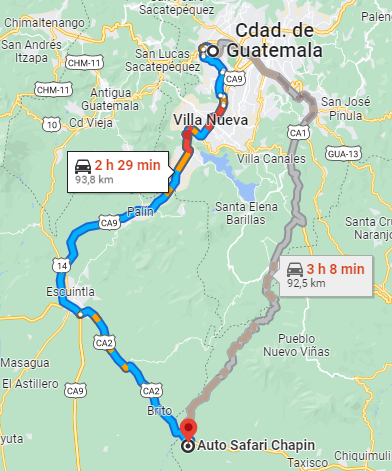

Km 87.5 Carretera a Taxisco
Auto Safari Chapín is an animal park and one of the most visited
tourist destinations near Escuintla, Guatemala.
The park has several areas including: Animal reserve with areas for lions, giraffes, hippos and other species.